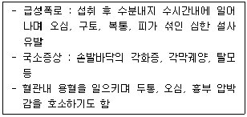
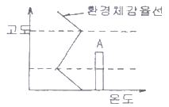
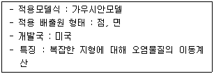
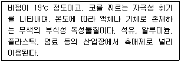
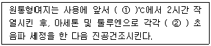
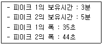
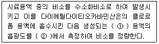
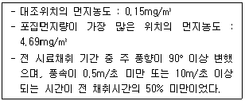
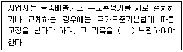

대기환경산업기사 (2010-05-09 기출문제)
1과목: 대기오염개론
1. 다음과 같이 인체에 영향을 미치는 오염물질로 가장 적합한 것은?

- 니켈
- 비소
- 톨루엔
- 카드뮴
(정답률: 91%)

2. A 혼합가스 성분을 분석한 결과 CO2 가 7%이고 나머지가 N2로 구성되어 있다면 이 혼합가스의 밀도는?
- 1.3 kg/Sm3
- 1.5 kg/Sm3
- 2.0 kg/Sm3
- 2.3 kg/Sm3
(정답률: 67%)
3. 다음 중 일반적으로 대기 내 체류시간이 가장 긴 것은?
- CO
- O2
- CO2
- N2O
(정답률: 88%)
4. 환경체감율선이 그림과 같이 실선으로 형성되어 있다. 이때 굴뚝의 유효고도가 A지점인 경우 두 점선 사이에서 배출되는 연기의 형태는?

- coning
- fanning
- fumigation
- lofting
(정답률: 74%)
5. 다음은 대기분산모델의 특징을 설명한 것이다. 가장 적합한 것은?

- ADMS
- CTDMPLUS
- MM5
- SMOGSTOP
(정답률: 70%)
6. 냄새물질의 특성에 관한 설명으로 옳지 않은 것은?
- 화학물질이 냄새물질로 되기 위한 조건으로 친유성기와 친수성기의 양기를 가져야 한다.
- 냄새물질이 비교적 저분자인 것은 휘발성이 높은 것을 의미한다.
- 냄새물질의 골격이 되는 탄소 수는 고분자일수록 관능기 특유의 냄새가 강하고 자극적이며 20∼25에서 가장 향기가 강하다.
- 분자내 수산기의 수는 1개 일 때 가장 강하고 그 수가 증가하면 약해져서 무취에 이른다.
(정답률: 90%)
7. 다음 설명하는 오염물질로 가장 적합한 것은?

- Copper
- Hydrogen fluoride
- Ozone
- Cytochrome
(정답률: 88%)
8. 다음 중 암모니아의 지표식물과 가장 거리가 먼 것은?
- 아카시아
- 메밀
- 해바라기
- 토마토
(정답률: 76%)
9. 대기가 매우 불안정한 조건에서 지상 10m에서의 풍속이 2m/sec 이면 100m에서는 몇 m/sec인가? (단, Deacon의 식을 이용하면 계산하고, 이 조건에서의 풍속지수는 0.2 이다.)
- 10.6
- 8.1
- 6.3
- 3.2
(정답률: 73%)
10. 지상 최대오염농도를 현재의 1/4로 감소시키려면 유효굴뚝높이는 몇 배 증가시켜야 하는가? (단, Sutton의 확산식을 사용하고, 기타 조건은 동일하다.)
- 2배
- 4배
- 8배
- 16배
(정답률: 72%)
11. 입자크기 측정법 중 현미경을 이용하는 방법으로 투영된 입자의 모양이 원형이 아닐 때 입자의 최장 또는 최단 크기로 정의하거나 여러 방향으로 나누어 크기를 측정하여 산술평균한 값으로 정의하기도 하는 직경은?
- Optical diameter
- Equivalent diameter
- Stokes diameter
- Aerodynamic diameter
(정답률: 82%)
12. London smog 사건의 기온역전층의 종류는?
- 복사성 역전
- 침강성 역전
- 난류성 역전
- 전선성 역전
(정답률: 91%)
13. 다이옥신에 관한 설명으로 옳지 않은 것은?
- 2,3,7,8-tetrachlorotetra-benzo-p-dioxin의 독성이 가장 높다.
- PCB의 부분산화 또는 불완전연소에 의하여 발생한다.
- 수용성이라기보다는 벤젠 등에 용해되는 지용성이다.
- 비점이 높아 열적 안정성이 좋다.
(정답률: 76%)
14. 대기질 측정을 위한 Coh 식을 나타낸 것 중 옳은 것은? (단, O.D 는 광학적 밀도이다.)
- O.D / 0.001
- O.D / 0.01
- log(O.D / 0.001)
- log(O.D / 0.01)
(정답률: 74%)
15. A공장에서 배출되는 아황산가스의 농도가 460 ppm이다. 이 공장에서 시간당 배출가스량이 81.8m3이라면 하루에 발생되는 아황산가스는 몇 kg 인가? (단, 표준상태 기준, 공장은 연속 가동됨)
- 1.89
- 2.58
- 3.50
- 4.56
(정답률: 65%)
16. 기압과 기온이 각각 930 mb, 18℃인 고도에서의 온위는? (단, 표준기압은 1000 mb 이다.)
- 284K
- 297K
- 308K
- 319K
(정답률: 79%)
17. 다음 대기오염물질을 분류할 때 2차 오염물질에 해당하는 것은?
- N2O3
- NOCl
- 금속산화물
- 방향족 탄화수소
(정답률: 89%)
18. 다음 수용모델과 분산모델에 관한 설명으로 가장 거리가 먼 것은?
- 분산모델은 지형 및 오염원의 조업조건에 영향을 받지 않으며, 현재나 과거에 일어났던 일을 추정, 미래를 위한 전략은 세울 수 있지만 미래예측은 어렵다.
- 수용모델은 수용체에서 오염물질의 특성을 분석한 후 오염원의 기여도를 평가하는 것이다.
- 분산모델은 특정오염원의 영향을 평가할 수 있는 잠재력을 가지고 있으나 기상과 관련하여 대기 중의 무작위적인 특성을 적절하게 묘사할 수 없으므로 결과에 대한 불확실성이 크다.
- 분산모델은 특정한 오염원의 배출속도와 바람에 의한 분산요인을 입력자료로 하여 수용체 위차에서의 영향을 계산한다.
(정답률: 81%)
19. 다음 특정물질 중 펜타클로로플루오르에탄(CFC-111)의 화학식으로 옳은 것은?
- C3H2FCl5
- C2FCl5
- C3F3Cl5
- C3HF2Cl5
(정답률: 77%)
20. SO2의 착지 농도를 감소시키기 위한 방법 중 옳지 않은 것은?
- 배출가스 온도를 가능한 한 낮춘다.
- 굴뚝 배출가스의 배출속도를 높인다.
- 저유황유를 사용한다.
- 굴뚝 높이를 높게 한다.
(정답률: 68%)
2과목: 대기오염 공정시험 기준(방법)
21. 다음은 굴뚝 배출가스 중 다이옥신류 분석을 위한 원통형여지의 사용 전 조치사항이다. ( )안에 가장 적합한 것은?

- ① 600, ② 30분간
- ① 850, ② 30분간
- ① 600, ② 60분간
- ① 850, ② 60분간
(정답률: 75%)
22. 비분산 적외선 분석법의 성능기준으로 옳은 것은?
- 동일 측정조건에서 제로가스와 스팬가스를 번갈아 3회 도입하여 각각의 측정값의 평균으로부터 구한 편차는 전체 눈금의 5% 이내이어야 한다.
- 측정가스의 유량이 표시한 기준유량에 대하여 2% 이내에서 변동하여도 성능에 지장이 있어서는 안된다.
- 감도는 전체 눈금의 2% 이하에 해당하는 농도변화를 검출할 수 있는 것이어야 한다.
- 전원전압이 설정 전압의 10% 이내로 변화하였을 때 지시치 변화는 전체눈금의 5%이내여야 하고, 주파수가 설정 주파수의 5%에서 변동해도 성능에 지장이 있어서는 안된다.
(정답률: 67%)
23. 대기오염공정시험방법상 화학분석 일반에서 규정한 시험의 기재 및 용어의 의미로 옳지 않은 것은?
- “정확히 단다”라 함은 규정한 량의 검체를 취하여 분석용 저울로 0.1mg까지 다는 것을 뜻한다.
- “항량이 될 때까지 건조한다 또는 강열한다”라 함은 따로 규정이 없는 한 보통의 건조방법으로 1시간 더 건조 또는 강열할 때 전후 무게의 차가 매 g당 0.3mg 이하일 때를 뜻한다.
- 시험조작중 “즉시”란 10초 이내에 표시된 조작을 하는 것을 뜻한다.
- 시료의 시험, 바탕시험 및 표준액에 대한 시험을 일련의 동일시험으로 행할 때 사용하는 시약 또는 시액은 동일로트(Lot)로 조제된 것을 사용한다.
(정답률: 88%)
24. 반경 1.8m인 원형굴뚝에서 먼지를 채취하고자 할 때 측정점수로 옳은 것은?
- 4
- 8
- 12
- 16
(정답률: 93%)
25. 다음 중 4 ∼ 아미노 안티피린 용액과 페리시안산 칼륨용액을 가하여 얻어진 적색의 흡광도를 측정하여 정량하는 오염물질은?
- 포름알데히드
- 페놀화합물
- 클로로포름
- 벤젠
(정답률: 87%)
26. 굴뚝 배출가스 중의 브롬화합물을 티오시안산 제2수은법으로 분석 시 추출용매로 가장 적합한 것은?
- n-Hexane
- CCl4
- Ethylbenzene
- TCE
(정답률: 74%)
27. 다음 중 가스크로마토그래프에서 사용되는 고정상 액체를 분류했을 때 “탄화수소계”에 해당하는 것은?
- 메틸실리콘
- 인산트리크레실
- 불화규소
- 스쿠아란
(정답률: 86%)
28. 흡광광도법에서 장치 및 장치 보정에 관한 설명으로 옳지 않은 것은?
- 가시부와 근적외부의 광원으로는 주로 텅스텐램프를 사용하고 자외부의 광원으로는 주로 중수소 방전관을 사용한다.
- 일반적으로 흡광도 눈금의 보정은 110℃에서 3시간 이상 건조한 과망간산칼륨(1급이상)을 N/10 수산화나트륨 용액에 녹인 과망간산나트륨용액으로 보정한다.
- 광전관, 광전자증배관은 주로 자외 내지 가시파장 범위에서 광전도셀은 근적외 파장범위에서, 광전지는 주로 가시파장 범위 내에서의 광선측광에 사용된다.
- 광전광도계는 파장 선택부에 필터를 사용한 장치로 단광속형이 많고 비교적 구조가 간단하여 작업분석용에 적당하다.
(정답률: 76%)
29. 환경대기 중의 탄화수소 농도를 측정하기 위한 시험방법 중 주 시험법에 해당하는 것은?
- 총탄화수소 측정법
- 비메탄 탄화수소 측정법
- 활성 탄화수소 측정법
- 이온성 탄화수소 측정법
(정답률: 87%)
30. 다음 중 자동측정기에 의한 아황산가스 연속측정법에 관한 설명으로 옳지 않은 것은?
- 적외선흡수법은 시료가스를 셀에 취하여 7300 nm 부근에서 적외선 가스분석계를 사용하여 아황산가스의 광흡수를 측정하는 방법이다.
- 자외선흡수법은 자외선 흡수분석계를 사용하여 280∼320nm에서 시료중 아황산가스의 광흡수를 측정하는 방법이다.
- 용액전도율법의 측정범위는 5∼2000 ppm SO2 이며, 방해물질은 염화수소, 암모니아, 이산화질소 등이다.
- 불꽃광도법은 불꽃광도검출분석계를 사용하여 시료를 공기 또는 질소로 묽힌후 수소불꽃 중에 도입할 때 594nm부근의 발광광도를 측정하는 방법이다.
(정답률: 71%)
31. 환경대기 중 옥시단트의 알칼리성 요오드화 칼륨분석방법(수동)으로 옳지 않은 것은?
- 유리된 요오드는 파장 352nm에서 흡광도를 측정하여 정량한다.
- 흡수액에 과산화수소를 가하여 흡수시키면 황산이온이 아황산가스로 산화되며 여분의 과산화수소수는 수산화칼륨을 가하기 전에 끓여서 제거한다.
- 대기 중에 존재하는 미량의 옥시단트를 알칼리성 요오드화 칼륨용액에 흡수시키고 초산으로 pH 3.8의 산성으로 한다.
- 이 방법에 의한 오존의 검출한계는 1∼16㎍이며, 더 높은 농도의 시료는 흡수액으로 적당히 묽혀 사용할 수 있다.
(정답률: 58%)
32. 다음 중 4-메틸-2-펜타논, EDTA용액 및 몰린용액을 가하여 정량하는 오염물질은?
- 납화합물
- 니켈화합물
- 베릴륨화합물
- 카드뮴화합물
(정답률: 84%)
33. 가스크로마토그래프에서 1,2 시료의 분석치가 다음과 같을 때 분리계수는?

- 1.7
- 2.5
- 3.0
- 4.4
(정답률: 66%)
34. 굴뚝 배출가스 중 알데히드 및 케톤화합물(카르보닐화합물)의 분석방법으로 옳지 않은 것은?
- 액체크로마토그래프법으로 분석 시 하이드라존은 특히 650∼680nm에서 최대 흡광치를 나타낸다.
- 액체크로마토그래프법에서 배출가스 중의 알데히드류는 흡수액 2.4-DNPH(Dinitrophenylhydrazine)과 반응하여 하이드라존 유도체를 생성하고 이를 분석한다.
- 아세틸 아세톤법은 황색 발색액의 흡광도를 측정한다.
- 아세틸 아세톤법은 아황산가스 공존 시 영향을 받으므로 흡수발색액에 염화제이수은과 염화나트륨을 넣는다.
(정답률: 70%)
35. 다음은 굴뚝 배출가스 중 비소화합물의 자외선 가시선분광법(흡광광도법)에 관한 설명이다. ( )안에 알맞은 것은?

- ① 등황색, ② 510nm
- ① 등황색, ② 400nm
- ① 적자색, ② 510nm
- ① 적자색, ② 400nm
(정답률: 87%)
36. 환경대기 내의 아황산가스 농도의 자동 연속 측정방법 중 주 시험방법에 해당하는 것은?
- 용액전도율법
- 불꽃광도법
- 자외선형광법
- 화학방광법
(정답률: 76%)
37. 굴뚝 배출가스 중 황산화물 분석법인 침전적정법과 중화적정법에서 각각 종말점의 색깔은?
- 침전적정법 : 청색, 중화적정법 : 녹색
- 침전적정법 : 갈색, 중화적정법 : 적색
- 침전적정법 : 적색, 중화적정법 : 갈색
- 침전적정법 : 녹색, 중화적정법 : 청색
(정답률: 72%)
38. 외부로 비산 배출되는 먼지를 하이볼륨에어샘플러법으로 측정한 조건이 다음과 같을 때 비산먼지의 농도는?

- 4.54mg/m3
- 5.45mg/m3
- 6.81mg/m3
- 8.17mg/m3
(정답률: 61%)
39. 이온크로마토그래피에 관한 설명으로 가장 거리가 먼 것은?
- 써프렛서에서 관형은 음이온인 경우 스티롤계 강산형(H+) 수지가 충진된 것을 사용한다.
- 가시선흡수검출기(VIS 검출기)는 고성능 액체크로마토 그래피 분야 및 분석화학 분야에 가장 널리 사용되는 검출기이다.
- 송액펌프는 맥동이 적은 것을 사용한다.
- 용리액조는 이온성분이 용출되지 않는 재질로써 일반적으로 폴리에틸렌이나 경질 유리제를 사용한다.
(정답률: 68%)
40. 환경대기 중 다환방향족탄화수소류(PAHs)의 기체크로마토그래피/질량분석법에서 사용되는 용어 정의 중 “추출과 분석 전에 각 시료, 공 시료, 매체시료에 더해지는 화학적으로 반응성이 없는 환경 시료 중에 없는 물질”을 의미하는 것은?
- 내부표준물질
- 대체표준물질
- 외부표준물질
- 냉매
(정답률: 84%)
3과목: 대기오염방지기술
41. 유해가스 처리에 사용되는 세정액 선택 시 그 정도가 높을수록 좋은 것은?
- 점도
- 휘발성
- 응고점
- 용해도
(정답률: 82%)
42. 전기집진장치에서 분당 240m3 처리가스량을 이동속도 6cm/sec로 처리하고 있다. 집진판의 면적이 250m2이고 유입농도가 6.47g/m3이라면 출구농도(g/m3)는? (단, 집진율은 Deusch-Anderson식 적용)
- 0.118
- 0.131
- 0.152
- 0.188
(정답률: 42%)
43. A공장의 백필터의 입구가스량은 35.8 Sm3/h, 유입먼지농도는 4.56 g/Sm3, 출구의 가스량은 42.6 Sm3/h, 배출먼지농도는 4.1 mg/Sm3이었다면 이 백필터의 집진율은?
- 87.55%
- 89.03%
- 97.19%
- 99.89%
(정답률: 77%)
44. 다음 중 연료비(고정탄소/휘발분)가 가장 높은 석탄은?
- 갈색갈탄
- 흑색갈탄
- 고도역청탄
- 무연탄
(정답률: 85%)
45. 다음 악취물질 중 “자극적이며, 새콤하고 타는 듯한 냄새”와 가장 가까운 것은?
- CH3SH
- (CH3)2CH2CHO
- CH3SSCH3
- (CH3)2S
(정답률: 91%)
46. 집진장치의 압력손실 240mmH2O, 처리가스량이 36500m3/h이면 송풍기 소요동력(kW)은? (단, 송풍기 효율 70%, 여유율 1.2)
- 30.6
- 35.2
- 40.9
- 44.5
(정답률: 68%)
47. 다음 중 천연가스의 이론공기량으로 가장 적합한 것은?
- 8.5 ∼ 10.0 Sm3/Sm3
- 10 ∼ 15 Sm3/Sm3
- 20 ∼ 25 Sm3/Sm3
- 25 ∼ 35 Sm3/Sm3
(정답률: 75%)
48. CO를 백금계 촉매를 사용하여 CO2로 완전산화시켜 처리할 때 촉매독으로 작용하는 물질과 가장 거리가 먼 것은?
- Sn
- As
- Cl
- Zr
(정답률: 74%)
49. LNG와 LPG에 관한 설명으로 가장 거리가 먼 것은?
- LNG는 천연가스를 1기압하에서 -162℃정도로 냉각하여 액화시킨 연료이다.
- LPG는 상온에서 적은 압력을 주면 용이하게 액화되는 석유계의 탄화수소를 말한다.
- 발열량은 LPG보다 LNG가 높다.
- LPG의 대부분은 석유정제시 부산물로 얻어진다.
(정답률: 87%)
50. 직경 0.4㎜의 액적(구)이 1.5 × 10-2m/s로 자유침강 할 때 레이놀즈 수(NRe)는? (단, 공기밀도는 1.2kg/m3, 점도는 1.8 × 10-5kg/m·s 이다.)
- 0.4
- 0.8
- 1.2
- 1.9
(정답률: 62%)
51. 전기집진장치에 관한 설명으로 가장 거리가 먼 것은?
- 먼지입자의 전기비저항이 낮을 경우 암모니아를 주입시켜 황산과 반응하여 생성된 황산암모늄이 저항을 증가시키는 역할을 한다.
- 처리가스내 수분함유량이 증가하면 전기비저항이 증가되므로, 저비저항 먼지는 전기집진장치 입구내에 수증기를 분사함으로써 저비저항 먼지의 저항을 증대시킨다.
- 처리가스 온도와 수분으로 비저항을 조절하고자 하는 경우는 처리가스 온도가 노점 온도 이상이 되도록 하지 않으면 부식이 발생될 수 있다.
- 전기비저항이 104Ω-cm이하의 경우에는 재비산에 의해 집진효율이 저하한다.
(정답률: 42%)
52. A액체연료를 완전연소한 결과 습배출연소가스량이 18.6Sm3kg이었다. 이 연료의 이론공기량이 11.9Sm3/kg 일 때 이론습배출가스량이 12.8Sm3/kg 이었다면 공기비(m)는?
- 약 1.12
- 약 1.22
- 약 1.33
- 약 1.49
(정답률: 43%)
53. 흡착제에 관한 설명 중 가장 거리가 먼 것은?
- 활성탄의 표면적은 600∼1400m2/g 정도로 용제회수, 악취제거, 가스정화 등에 사용된다.
- 합성지올리이트는 특정한 물질을 선택적으로 흡착시키는 데 이용할 수 있다.
- 흡착제의 비표면적과 흡착물질에 대한 친화력이 클수록 흡착의 효과는 커진다.
- 실리카겔은 흡착제 중 사용온도범위가 높아 500℃ 정도 까지 가능하나, 수분과 같은 극성물질에 대한 흡착력은 약하다.
(정답률: 80%)
54. 배열탈황을 하지 않는 시설에서 중유 중의 황성분이 중량비로 S(%), 중유사용량이 매시 W(L)라면 황산화물의 배출량(Sm3/hr)은? (단, 중유의 비중은 0.9, 표준상태를 기준으로 하며, 황산화물은 전량 SO2 로 계산한다.)
- 0.0063 × S × W
- 0.7 × S × W
- 11.2 × S × W
- 22.4 × S × W
(정답률: 66%)
55. CH4 0.5Sm3, C2H6 0.5Sm3 를 공기비 1.5로 완전연소시킬 경우 습연소가스량(Sm3/Sm3)은?
- 약 17
- 약 19
- 약 21
- 약 28
(정답률: 49%)
56. 다음 각 유해가스 처리방법으로 가장 거리가 먼 것은?
- 벤젠은 촉매연소법을 이용하여 처리한다.
- 브롬은 가성소다 수용액을 이용하여 처리한다.
- 시안화수소는 물에 대한 용해도가 크므로 가스를 물로 세정하여 제거한다.
- 아크로레인은 황화수소 가스를 투입하여 황화합물로 침전시켜 제거한다.
(정답률: 60%)
57. 원추하부반경이 60cm인 사이클론에서 배출가스의 접선속도가 600m/min 일 때 분리계수는?
- 0.017
- 17
- 612
- 61224
(정답률: 63%)
58. 다음 흡수장치 중 가스분산형 흡수장치에 해당하는 것은?
- 하이드로필터
- 기포탑
- 젖은벽탑
- 분무탑
(정답률: 67%)
59. 사이클론으로 576m3/h 의 함진가스를 처리하고자 한다. 사이클론의 입구 속도를 10m/s, 단변과 장변의 비를 1:2로 할 경우 단변의 길이는?
- 6.82 cm
- 8.94 cm
- 13.64 cm
- 17.9 cm
(정답률: 54%)
60. A굴뚝배출가스 중 염소농도가 78mL/Sm3이다. 염소농도를 20mg/Sm3으로 저하시키기 위해 제거해야 할 염소량(mL/Sm3)은?
- 약 58
- 약 60
- 약 66
- 약 72
(정답률: 61%)
4과목: 대기환경 관계 법규
61. 대기환경보전법상 방지시설을 거치지 아니하고 오염물질을 배출할 수 있는 공기 조절장치나 가지 배출관 등을 설치한 자에 대한 벌칙기준은? (단, 사고예방 등을 위해 다른 법령에서 허가받은 경우 등은 제외)
- 7년 이하의 징역이나 1억원 이하의 벌금
- 5년 이하의 징역이나 3천만원 이하의 벌금
- 3년 이하의 징역이나 2천만원 이하의 벌금
- 1년 이하의 징역이나 500만원 이하의 벌금
(정답률: 47%)
62. 환경정책기본법상 이 법에서 사용하는 용어의 정의로 옳지 않은 것은?
- “환경용량”이라 함은 일정한 지역안에서 환경의 질을 유지하고 환경오염 또는 환경훼손에 대하여 환경이 스스로 수용·정화 및 복원할 수 있는 한계를 말한다.
- “자연환경”이라 함은 지하·지표(해양을 포함한다)및 지상의 모든 생물과 이들을 둘러싸고 있는 비생물적인 것을 포함한 자연의 상태(생태계 및 자연경관을 포함한다)를 말한다.
- “환경”이라 함은 자연환경과 인간환경, 생물환경을 말한다.
- “환경훼손”이라 함은 야생동·식물의 남획 및 그 서식지의 파괴, 생태계 질서의 교란, 자연경관의 훼손, 표토의 유실 등으로 인하여 자연환경의 본래적 기능에 중대한 손상을 주는 상태를 말한다.
(정답률: 82%)
63. 대기환경보전법규상 휘발성유기화합물 배출규제와 관련된 행정처분기준 중 휘발성유기화합물 배출억제·방지시설 설치 등의 조치를 이행하였으나 기준에 미달하는 경우 위반차수(1차-2차-3차)별 행정처분기준으로 옳은 것은?
- 조업정지10일-조업정지30일-폐쇄
- 조업정지10일-조업정지30일-등록취소
- 경고-개선명령-허가취소 또는 폐쇄
- 개선명령-개선명령-조업정지10일
(정답률: 81%)
64. 대기환경보전법령상 대기오염물질발생량의 합계가 연간 25톤인 사업장은 사업장 분류기준 중 몇 종 사업장에 해당하는가?
- 1종 사업장
- 2종 사업장
- 3종 사업장
- 4종 사업장
(정답률: 67%)
65. 다음 중 대기오염 경보단계별 조치사항 중 “경보발령” 단계에 해당하는 것은?
- 사업장의 조업시간 단축명령
- 사업장의 연료사용량 감축 권고
- 자동차 사용의 자제 요청
- 주민의 실외활동 금지 요청
(정답률: 65%)
66. 대기환경보전법상 자동차연료·첨가제 또는 촉매제 제조기준 중 휘발유 연료의 납함량(g/L) 제조기준은? (단, 2009년 1월 1일부터 적용)
- 0.0013 이하
- 0.013 이하
- 0.7 이하
- 2.3 이하
(정답률: 75%)
67. 대기환경보전법상 자동차 배출가스로 인한 대기오염을 줄이기 위해 자동차의 원동기를 가동한 상태로 주차하거나 정차하는 행위를 제한할 수 있는 곳으로 가장 거리가 먼 것은?
- 터미널
- 차고지
- 주차장
- 도로
(정답률: 74%)
68. 대기환경보전법규상 자동차연료형 첨가제의 종류에 해당하지 않는 것은?
- 청정분산제
- 매연분산제
- 세탄가향상제
- 세척제
(정답률: 62%)
69. 다중이용시설 등의 실내공기질 관리법규상 “지하도 상가”에서 석면 실내공기질 권고기준(개/cc)은?
- 0.01 이하
- 0.1 이하
- 1 이하
- 10 이하
(정답률: 52%)
70. 다음은 대기환경보전법규상 측정기기의 운영·관리기준이다. ( )안에 알맞은 것은?

- 1년 이상
- 3년 이상
- 5년 이상
- 10년 이상
(정답률: 75%)
71. 다중이용시설 등의 실내공기질 관리법규상 “철도역사의 대합실”에서의 PM10(㎍/m3) 실내공기질 유지기준은?
- 200 이하
- 150 이하
- 100 이하
- 50 이하
(정답률: 73%)
72. 대기환경보전법규상 환경기술인을 임명하지 아니한 경우 4차 행정처분기준으로 옳은 것은?
- 경고
- 조업정지5일
- 조업정지10일
- 선임명령
(정답률: 79%)
73. 대기환경보전법상 “기후·생태계 변화유발물질”과 거리가 먼 것은?
- 이산화질소
- 메탄
- 수소불화탄소
- 육불화황
(정답률: 60%)
74. 대기환경보전법규상 다음 위임업무 보고사항 중 보고횟수기준이 연 2회에 해당되는 것은?
- 수입자동차 배출가스 인증 및 검사현황
- 비산먼지 발생대상사업 신고현황
- 배출시설의 설치허가 및 신고, 대기오염물질 배출상황검사, 배출시설에 대한 업무처리현황
- 비산먼지발생대상사업장 지도·점검실적
(정답률: 63%)
75. 대기환경보전법령상 초과부과금 산정기준 중 오염물질 1킬로그램당 부과금액이 다음 중 가장 낮은 것은?
- 황화수소
- 이황화탄소
- 시안화수소
- 불소화합물
(정답률: 50%)
76. 대기환경보전법령상 “초과부과금” 부과대상 오염물질에 해당하지 않는 것은?
- 암모니아
- 먼지
- 염화수소
- 포름알데히드
(정답률: 72%)
77. 대기환경보전법규상 운행차의 정밀검사 방법·기준 및 검사대상 항목 중 일반기준으로 옳지 않은 것은?
- 배출가스 검사는 관능 및 기능검사를 한 후 시행한다.
- 휘발유와 가스를 같이 사용하는 자동차의 배출가스 측정 및 배출허용기준은 휘발유 기준을 적용한다.
- 차대동력계상에서 자동차의 운전은 검사기술인력이 하여야 한다.
- 특수 용도로 사용하기 위하여 특수장치 등을 부착하여 엔진최고회전수 등을 제한하는 자동차인 경우에는 해당 자동차의 측정 엔진최고회전수를 엔진정격회전수로 수정·적용하여 배출가스검사를 시행할 수 있다.
(정답률: 64%)
78. 환경정책기본법령상 우리나라 대기환경 기준으로 설정된 항목에 해당하지 않는 것은?
- 납
- 일산화탄소
- 이산화탄소
- 벤젠
(정답률: 52%)
79. 대기환경정책기본법령상 환경부장관에 의해 인증이 면제되는 차량에 해당되지 않는 것은?
- 박람회에 참가하는 자가 전시의 목적으로 일시 반입하는 자동차
- 주한 외국군대의 구성원이 공용 목적으로 사용하기 위한 자동차
- 외국에서 국내의 공공기관 또는 비영리단체에 무상으로 기증한 자동차
- 자동차 관련 연구기관 등이 자동차의 개발 또는 전시 등 주행 외의 목적으로 사용하기 위하여 수입하는 자동차
(정답률: 71%)
80. 대기환경보전법상 100만원 이하의 과태료 부과대상 행위기준에 해당하지 않는 것은?
- 대기환경규제지역에서 휘발성유기화합물 배출시설 변경 신고를 하여야 함에도 불구하고 휘발성유기화합물 배출시설의 변경신고를 하지 아니한 자
- 배출시설 변경신고를 하여야 함에도 불구하고 변경신고를 하지 아니한 자
- 운행차배출허용기준을 위반한 자동차의 소유자
- 운행차의 배출가스 정밀검사를 받지 아니한 자
(정답률: 46%)